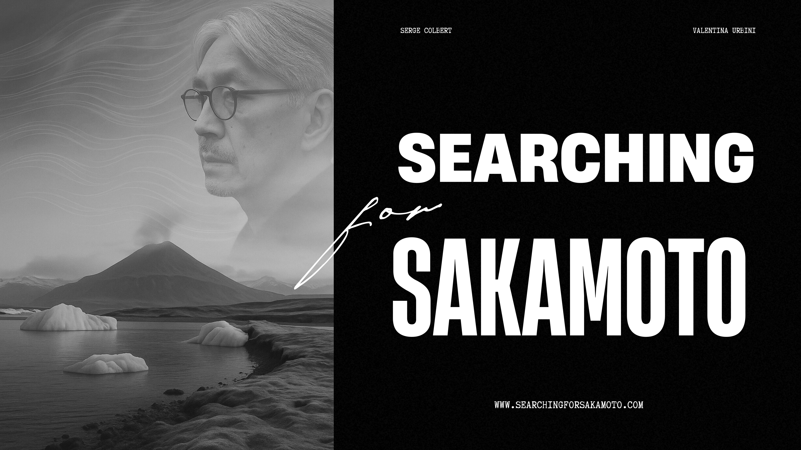
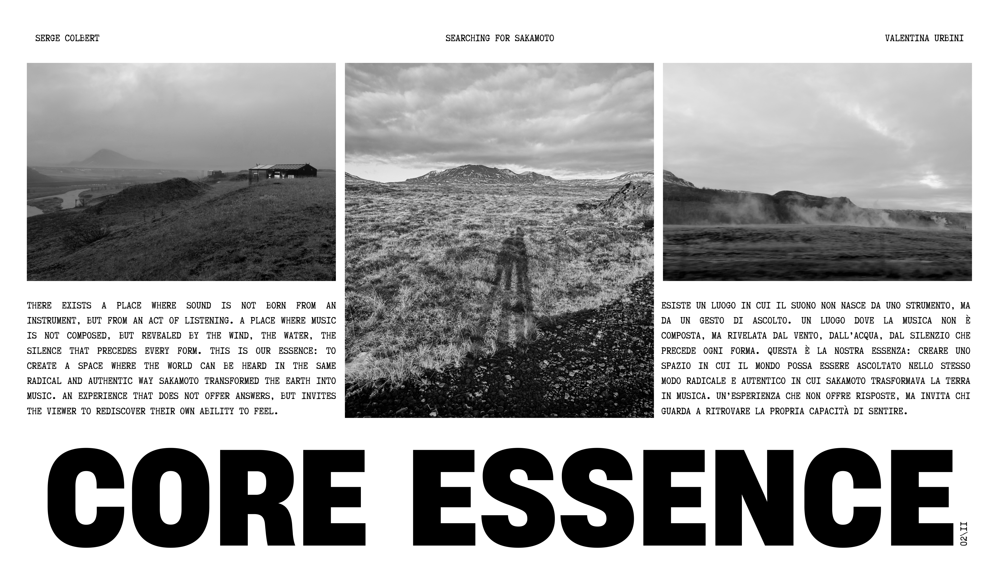
Core Essence
Esiste un luogo in cui il suono non nasce da uno strumento, ma da un gesto di ascolto. Un luogo dove la musica non è composta, ma rivelata dal vento, dall'acqua, dal silenzio che precede ogni forma. Questa è la nostra essenza: creare uno spazio in cui il mondo possa essere ascoltato nello stesso modo radicale e autentico in cui Sakamoto trasformava la terra in musica. Un'esperienza che non offre risposte, ma invita chi guarda a ritrovare la propria capacità di sentire.
There exists a place where sound is not born from an instrument, but from an act of listening. A place where music is not composed, but revealed by the wind, the water, the silence that precedes every form. This is our essence: to create a space where the world can be heard in the same radical and authentic way Sakamoto transformed the earth into music. An experience that does not offer answers, but invites the viewer to rediscover their own ability to feel.
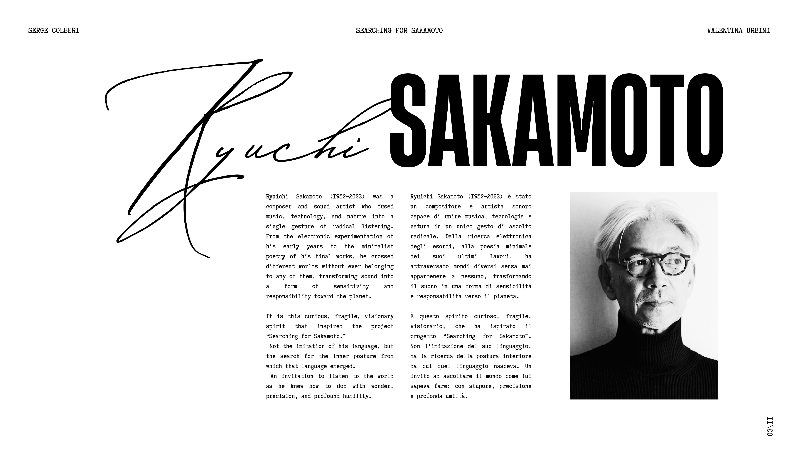
Ryuichi Sakamoto (1952–2023)
Ryuichi Sakamoto (1952–2023) è stato un compositore e artista sonoro capace di unire musica, tecnologia e natura in un unico gesto di ascolto radicale. Dalla ricerca elettronica degli esordi, alla poesia minimale dei suoi ultimi lavori, ha attraversato mondi diversi senza mai appartenere a nessuno, trasformando il suono in una forma di sensibilità e responsabilità verso il pianeta.
È questo spirito curioso, fragile, visionario, che ha ispirato il progetto «Searching for Sakamoto». Non l'imitazione del suo linguaggio, ma la ricerca della postura interiore da cui quel linguaggio nasceva. Un invito ad ascoltare il mondo come lui sapeva fare: con stupore, precisione e profonda umiltà.
Ryuichi Sakamoto (1952–2023) was a composer and sound artist who fused music, technology, and nature into a single gesture of radical listening. From the electronic experimentation of his early years to the minimalist poetry of his final works, he crossed different worlds without ever belonging to any of them, transforming sound into a form of sensitivity and responsibility toward the planet.
It is this curious, fragile, visionary spirit that inspired the project «Searching for Sakamoto.» Not the imitation of his language, but the search for the inner posture from which that language emerged. An invitation to listen to the world as he knew how to do: with wonder, precision, and profound humility.
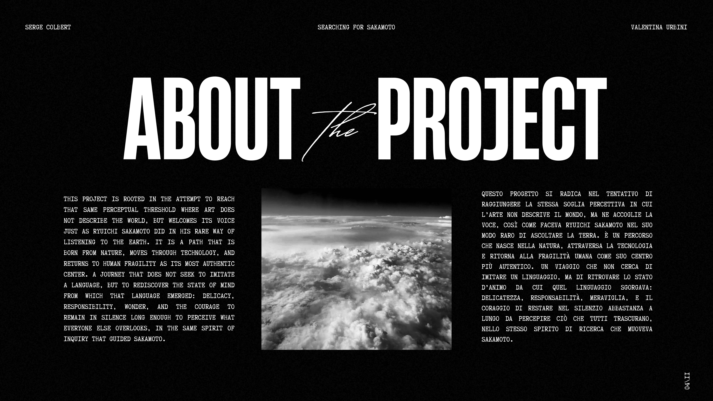
About the Project
Questo progetto si radica nel tentativo di raggiungere la stessa soglia percettiva in cui l'arte non descrive il mondo, ma ne accoglie la voce, così come faceva Ryuichi Sakamoto nel suo modo raro di ascoltare la terra. È un percorso che nasce nella natura, attraversa la tecnologia e ritorna alla fragilità umana come suo centro più autentico. Un viaggio che non cerca di imitare un linguaggio, ma di ritrovare lo stato d'animo da cui quel linguaggio sgorgava: delicatezza, responsabilità, meraviglia, e il coraggio di restare nel silenzio abbastanza a lungo da percepire ciò che tutti trascurano, nello stesso spirito di ricerca che muoveva Sakamoto.
This project is rooted in the attempt to reach that same perceptual threshold where art does not describe the world, but welcomes its voice — just as Ryuichi Sakamoto did in his rare way of listening to the earth. It is a path that is born from nature, moves through technology, and returns to human fragility as its most authentic center. A journey that does not seek to imitate a language, but to rediscover the state of mind from which that language emerged: delicacy, responsibility, wonder, and the courage to remain in silence long enough to perceive what everyone else overlooks, in the same spirit of inquiry that guided Sakamoto.
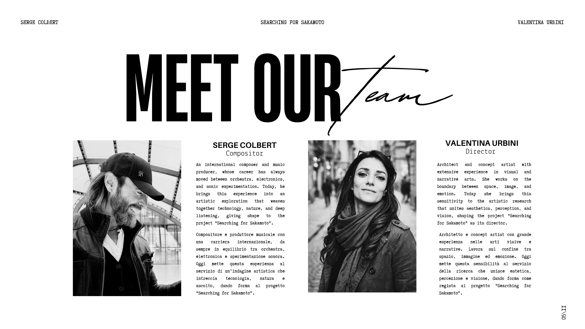
Meet Our Team
Serge Colbert — Compositor
Compositore e produttore musicale con una carriera internazionale, da sempre in equilibrio tra orchestra, elettronica e sperimentazione sonora. Oggi mette questa esperienza al servizio di un'indagine artistica che intreccia tecnologia, natura e ascolto, dando forma al progetto «Searching for Sakamoto».
An international composer and music producer, whose career has always moved between orchestra, electronics, and sonic experimentation. Today, he brings this experience into an artistic exploration that weaves together technology, nature, and deep listening, giving shape to the project «Searching for Sakamoto».
Valentina Urbini — Director
Architetto e concept artist con grande esperienza nelle arti visive e narrative. Lavora sul confine tra spazio, immagine ed emozione. Oggi mette questa sensibilità al servizio della ricerca che unisce estetica, percezione e visione, dando forma come regista al progetto «Searching for Sakamoto».
Architect and concept artist with extensive experience in visual and narrative arts. She works on the boundary between space, image, and emotion. Today she brings this sensitivity to the artistic research that unites aesthetics, perception, and vision, shaping the project «Searching for Sakamoto» as its director.
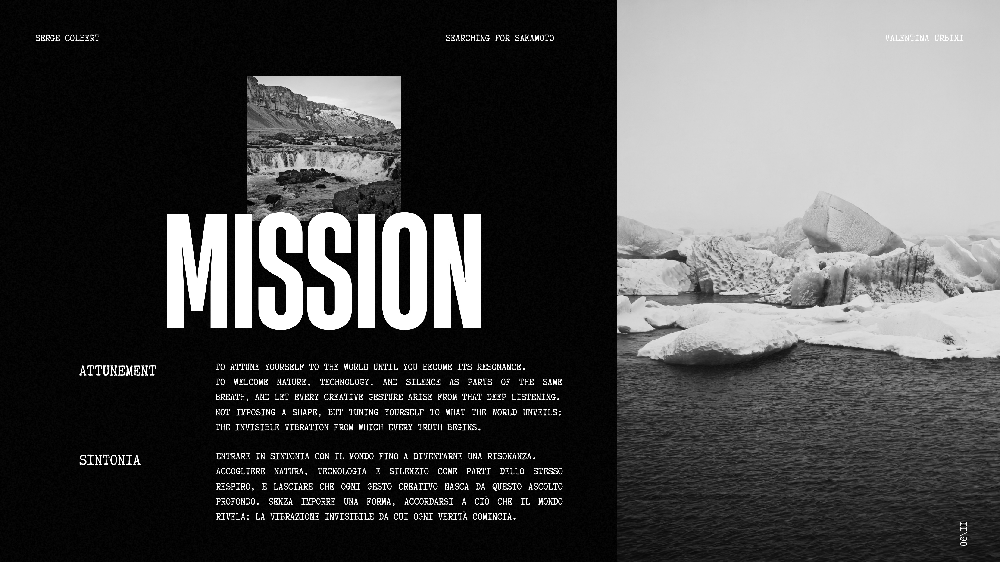
Mission
Attunement
To attune yourself to the world until you become its resonance. To welcome nature, technology, and silence as parts of the same breath, and let every creative gesture arise from that deep listening. Not imposing a shape, but tuning yourself to what the world unveils: the invisible vibration from which every truth begins.
Sintonia
Entrare in sintonia con il mondo fino a diventarne una risonanza. Accogliere natura, tecnologia e silenzio come parti dello stesso respiro, e lasciare che ogni gesto creativo nasca da questo ascolto profondo. Senza imporre una forma, accordarsi a ciò che il mondo rivela: la vibrazione invisibile da cui ogni verità comincia.
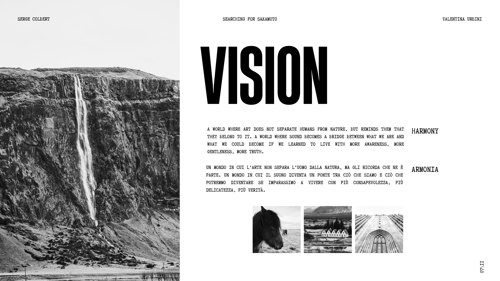
Vision
Armonia
Un mondo in cui l'arte non separa l'uomo dalla natura, ma gli ricorda che ne è parte. Un mondo in cui il suono diventa un ponte tra ciò che siamo e ciò che potremmo diventare se imparassimo a vivere con più consapevolezza, più delicatezza, più verità.
Harmony
A world where art does not separate humans from nature, but reminds them that they belong to it. A world where sound becomes a bridge between what we are and what we could become if we learned to live with more awareness, more gentleness, more truth.
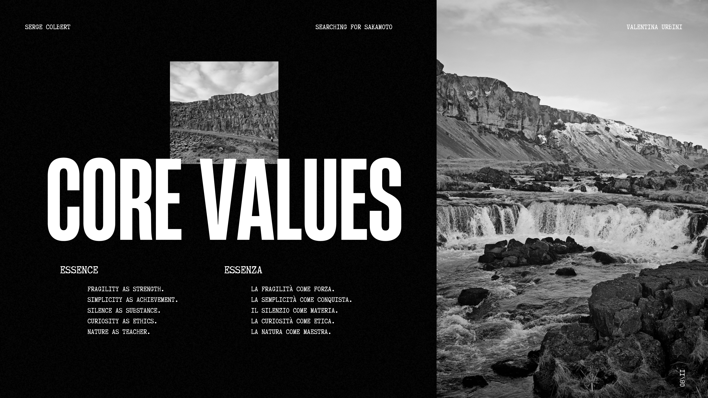
Core Values
Essenza
- La fragilità come forza.
- La semplicità come conquista.
- Il silenzio come materia.
- La curiosità come etica.
- La natura come maestra.
Essence
- Fragility as strength.
- Simplicity as achievement.
- Silence as substance.
- Curiosity as ethics.
- Nature as teacher.
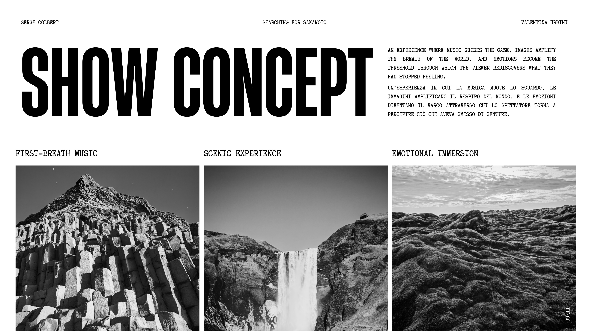
Show Concept
Un'esperienza in cui la musica muove lo sguardo, le immagini amplificano il respiro del mondo, e le emozioni diventano il varco attraverso cui lo spettatore torna a percepire ciò che aveva smesso di sentire.
An experience where music guides the gaze, images amplify the breath of the world, and emotions become the threshold through which the viewer rediscovers what they had stopped feeling.
- First-Breath Music
- Scenic Experience
- Emotional Immersion
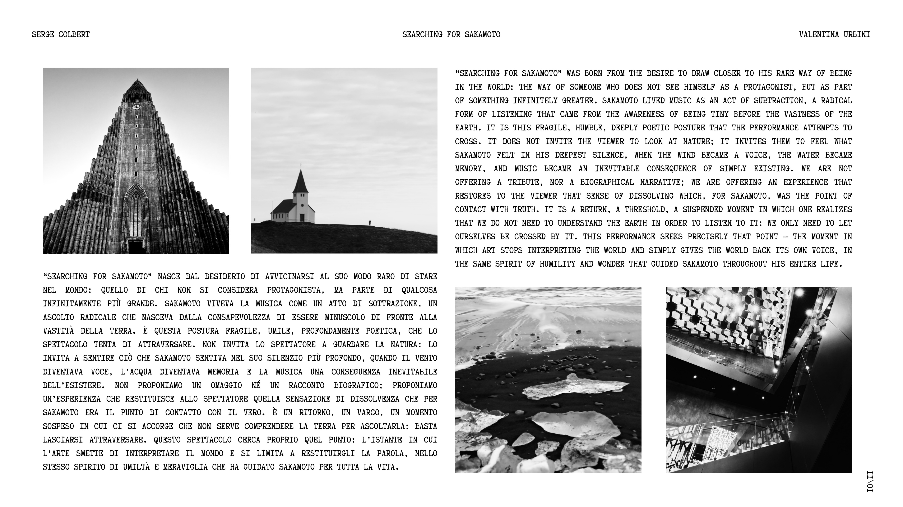
The Journey
«Searching for Sakamoto» nasce dal desiderio di avvicinarsi al suo modo raro di stare nel mondo: quello di chi non si considera protagonista, ma parte di qualcosa infinitamente più grande. Sakamoto viveva la musica come un atto di sottrazione, un ascolto radicale che nasceva dalla consapevolezza di essere minuscolo di fronte alla vastità della terra. È questa postura fragile, umile, profondamente poetica, che lo spettacolo tenta di attraversare. Non invita lo spettatore a guardare la natura: lo invita a sentire ciò che Sakamoto sentiva nel suo silenzio più profondo, quando il vento diventava voce, l'acqua diventava memoria e la musica una conseguenza inevitabile dell'esistere. Non proponiamo un omaggio né un racconto biografico; proponiamo un'esperienza che restituisce allo spettatore quella sensazione di dissolvenza che per Sakamoto era il punto di contatto con il vero. È un ritorno, un varco, un momento sospeso in cui ci si accorge che non serve comprendere la terra per ascoltarla: basta lasciarsi attraversare. Questo spettacolo cerca proprio quel punto: l'istante in cui l'arte smette di interpretare il mondo e si limita a restituirgli la parola, nello stesso spirito di umiltà e meraviglia che ha guidato Sakamoto per tutta la vita.
«Searching for Sakamoto» was born from the desire to draw closer to his rare way of being in the world: the way of someone who does not see himself as a protagonist, but as part of something infinitely greater. Sakamoto lived music as an act of subtraction, a radical form of listening that came from the awareness of being tiny before the vastness of the earth. It is this fragile, humble, deeply poetic posture that the performance attempts to cross. It does not invite the viewer to look at nature; it invites them to feel what Sakamoto felt in his deepest silence, when the wind became a voice, the water became memory, and music became an inevitable consequence of simply existing. We are not offering a tribute, nor a biographical narrative; we are offering an experience that restores to the viewer that sense of dissolving which, for Sakamoto, was the point of contact with truth. It is a return, a threshold, a suspended moment in which one realizes that we do not need to understand the earth in order to listen to it: we only need to let ourselves be crossed by it. This performance seeks precisely that point — the moment in which art stops interpreting the world and simply gives the world back its own voice, in the same spirit of humility and wonder that guided Sakamoto throughout his entire life.
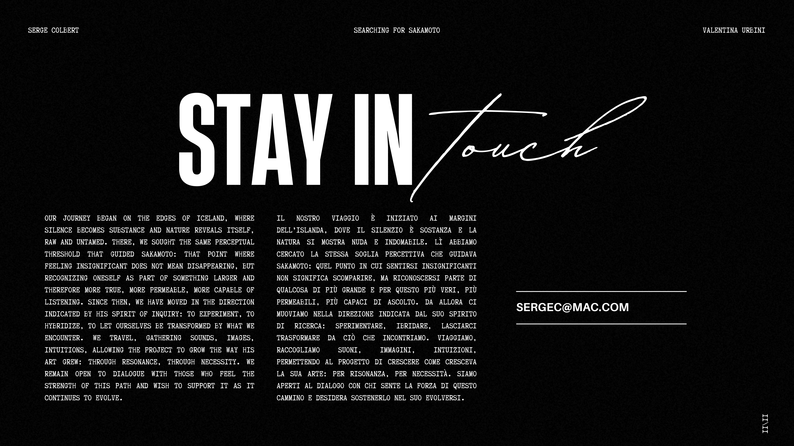
Stay in Touch
Contact: sergec@mac.com
Il nostro viaggio è iniziato ai margini dell'Islanda, dove il silenzio è sostanza e la natura si mostra nuda e indomabile. Là abbiamo cercato la stessa soglia percettiva che guidava Sakamoto: quel punto in cui sentirsi insignificanti non significa scomparire, ma riconoscersi parte di qualcosa di più grande e per questo più veri, più permeabili, più capaci di ascolto. Da allora ci muoviamo nella direzione indicata dal suo spirito di ricerca: sperimentare, ibridare, lasciarci trasformare da ciò che incontriamo. Viaggiamo, raccogliamo suoni, immagini, intuizioni, permettendo al progetto di crescere come cresceva la sua arte: per risonanza, per necessità. Siamo aperti al dialogo con chi sente la forza di questo cammino e desidera sostenerlo nel suo evolversi.
Our journey began on the edges of Iceland, where silence becomes substance and nature reveals itself, raw and untamed. There, we sought the same perceptual threshold that guided Sakamoto: that point where feeling insignificant does not mean disappearing, but recognizing oneself as part of something larger and therefore more true, more permeable, more capable of listening. Since then, we have moved in the direction indicated by his spirit of inquiry: to experiment, to hybridize, to let ourselves be transformed by what we encounter. We travel, gathering sounds, images, intuitions, allowing the project to grow the way his art grew: through resonance, through necessity. We remain open to dialogue with those who feel the strength of this path and wish to support it as it continues to evolve.